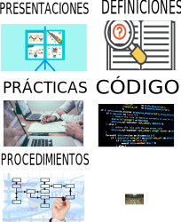

Para seleccionar el material dar click en la liga azul correspondiente de cada tipo de material.
En la sección de BIBLIOTECA van los apuntes de Compiladores en formato PDF. En la sección de MATERIAL DIGITAL van los apuntes de Compiladores en formato HTML.
Las formas de aprendizaje se usan después de ver el material disponible.

Presentaciones. Este es un material de apoyo para las presentaciones de los estudiantes durante el curso semestral.
Prácticas. Aquí se incluyen las prácticas que se realizarán durante el semestre.
Procedimientos. Este es un material de apoyo para la solución de los ejemplos y ejercicios que se plantean en los apuntes.
Definiciones. Aquí se enlistan todos las definiciones de los conceptos más importantes de la asignatura.
Código. Se presentan los códigos de los algoritmos significativos para la construcción del compilador.